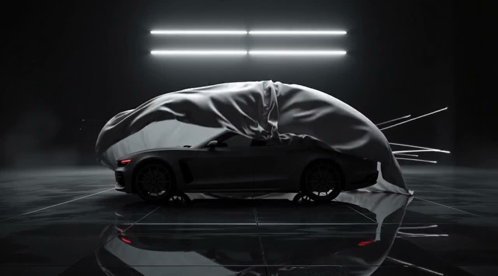
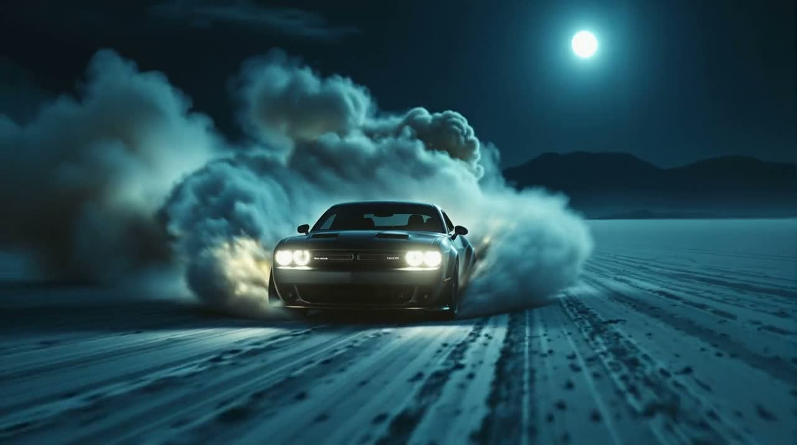

وانتا مدل ۰۳ — نوکتورن موتور آمادهبهکار — روشن
برای احساسکردن مهندسی شده؛ برای ماندن ساخته شده.
کلاسیکها رادوباره کشف کنید✳
۹۰۰ کیلوگرم آلومینیوم دستساز.
موتوری که از توضیحش سر باز میزنیم.
هنر نافرمانی مکانیکی
ساختار
۳۰برابر
سفتی بیشتر در مونوکوک
تسلیمناپذیر
تیراژ
۰۰۱/۱۵۰
هر دستگاه، سفارشی و منحصربهفرد
متوقفنشدنی
ارتباط
۰
سامانههای کمکی راننده
بیرقیب
کالبد فنیدقت، بیاجازه
عددهایی که
هرگز گرد نکردیم.
هیچچیز میان شما و ماشین نیست.
هر عدد با تلاش بهدست آمده؛ هر مرزی به چالش کشیده شده است.
توان خروجی۸۵۰اسببخار
موتور ۴٫۴ لیتری تختمیللنگ با پرخوران دوقلو
شتاب ۰ تا ۹۶ کیلومتر بر ساعت۲٫۶ثانیه
از سکون تا واکنش غریزی
حداکثر سرعت۳۵۱کیلومتر بر ساعت
بدون محدودکننده. بیمصالحه.
گشتاور۹۲۰نیوتنمتر
گشتاور پایدار از ۲۱۰۰ دور در دقیقه
آزمودهشده در بونویلمشخصات خودروی مفهومی

پس از نیمهشبدشت نمکی بونویل / ۴۰٫۷۶۰۸° شمالی
نه جاده، نه قانون؛ فقط حس رانندگی.وانتا در
دشتهای نمکی.
۰ تا ۹۶ کیلومتر/ساعت در ۲٫۶ ثانیهبرد ۸۰۵ کیلومترخط قرمز بیش از ۱۰٬۰۰۰ دور/دقیقه
وسواس در جزئیاتهیچچیز اتفاقی نیست
تفاوت را
همهچیز میسازد.
با دست ساخته شده.
برای لمسکردن با دستان شما.
هنرِ بیتعلیقرینگهای فورجشدهٔ برنزی ۲۰ اینچی
جرم کمتر. معنا بیشتر.
عنصر انسانیچرم شتری. روح آنالوگ.
درجههای کهربایی؛ چیزی برای پرتکردن حواس نیست.
جذب نورآبسیدین؛ هفت لایه پوشش مات.
پوششی که رازهایش را نگه میدارد.
حرف آخرچراغهای عقب امضای نوکتورن
حتی پس از رفتنتان، از یاد نمیرود.
ساختهشده با هنر دست؛ نه مونتاژشده.برای کاوش اسکرول کنید ←
امضای شماچهار پرداخت. یک غریزه.
آن رنگی را انتخاب کنید
که برای خود نگه میدارید.
در حال بارگذاری خودرو
پیشنمایش سهبعدی در دسترس نیست
برای چرخاندن بکشید · برای بزرگنمایی اسکرول کنید · با دکمهٔ راست جابهجا شویدفراتر از ساختدوام، یک انتخاب نیست
تسلیمناپذیرتسلیمناپذیر
+۲۰۰٬۰۰۰ مایل آزمون در نمکزار،
جادهٔ شنی و دامنهٔ یک آتشفشان.
بعضی چیزها
برای ماندگاری ساخته شدهاند.
دعوتنامهمحدود، از روی قصد
صد و
پنجاه دستگاه.
پس از آن ابزارها
ذوب میشوند.
با بیعانهٔ قابلاسترداد، جای ساخت خود را نگه دارید.
تحویل از سهماههٔ سوم ۲۰۲۷.
۱۱۲ / ۱۵۰دستگاه باقیمانده
فصل شما هنوز نوشته نشده است.تسلیمناپذیر ✳ متوقفنشدنی ✳ بیرقیب ✳ وانتا مدل ۰۳ نوکتورن ✳ تسلیمناپذیر ✳ متوقفنشدنی ✳ بیرقیب ✳ وانتا مدل ۰۳ نوکتورن ✳